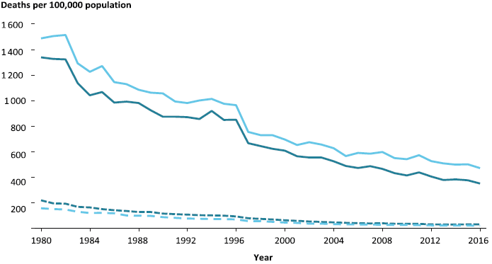
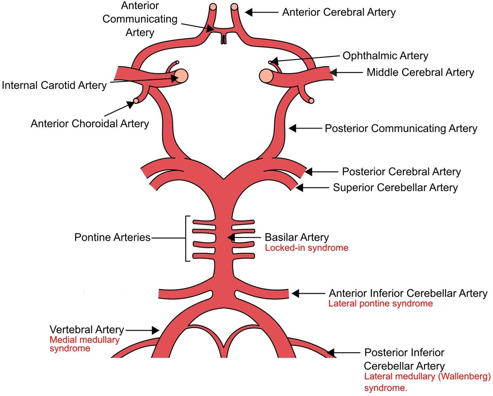
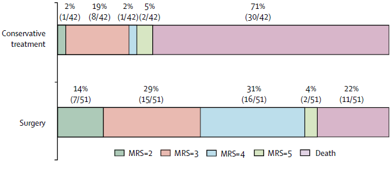
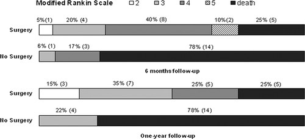

Stroke
Sudden onset of a constellation of neurological deficits secondary to a vascular event. Stroke:
Haemorrhagic stroke is covered under Chapter 386.
- Symptoms are:
- Focal (usually)
- Negative
i.e. Loss of usual function, rather than the presence of a new dysfunction. - Maximal at onset
- Without precipitating event
- Subdivided by cause into:
- Ischaemic (85%)
Related to:- Thrombosis
- Embolism
- Hypoperfusion
- Haemorrhagic (15%)
- Intracerebral
- Subarachnoid
- Ischaemic (85%)
Stroke is distinguished from TIA by resolution and radiological findings. A TIA is a clinical syndrome with:
- Abrupt onset of focal neurological symptoms consistent with ischaemia
- No radiological abnormality
- Resolution over 24 hours
Epidemiology and Risk
Epidemiology:

Stroke death in Australia in >55’s, stratified by sex.
- Second most common global cause of death
Greatly reduced, due to control of hypertension in the community. - Third most common cause of disability
Risk factors:
- Age
Risk doubles every decade after 55. - Smoking
- Cardiovascular disease
- AF
- HTN
- Dyslipidaemia
- DM
- Previous stroke or TIA
- IE
- Hypercoagulable state
- Pregnancy
- Factor V Leiden
- Protein C/S deficiency
- Antithrombin III deficiency
- Hyperviscosity syndromes
- Myeloma
- HHS
Hyperviscosity syndrome describes impaired blood flow and organ perfusion due to ↑ blood viscosity, which occurs due to ↑ concentration of cells or macromolecules, and is characterised by:
- Hypervolaemia
- Visual disturbances
- Neurological dysfunction
Coma, seizures.
Pathophysiology
All strokes result in interruption of cerebral blood flow, leading to cellular failure:
- Disruption to receptor and channel function
- Free radial release
- Mitochondrial dysfunction
- Membrane disruption
- Cell death
An ischaemic stroke has a:
- Core infarct
Irretrievably damaged centre of brain, seen as cytotoxic oedema on CT. A large (>50mL) core suggests less recoverable tissue by endovascular therapy. - Ischaemic penumbra
Potentially viable region of brain around the ischaemic core, that is malperfused and dysfunctional but may be recoverable with restoration of blood flow.- A large pnenumbra may show better response to endovascular therapy
- Slow progression of ischaemic penumbra (to core infarction) may indicate better late response to endovascular therapy
Aetiology
Ischaemic:
Large vessel thrombus/embolism is more amenable to endovascular retrieval than small vessel occlusion.
- Embolic
- Paradoxical embolism
PFO, ASD, VSD. - Cardiac embolism
- AF
- Valves
- Degenerative
- Prosthetic
- Endocarditic
- LV thrombus
- Ischaemic
- Aneurysm
- Apical thrombus
- Cardiomyopathy
Stasis.
- Ischaemic
- Carotid embolism
- Air
- Surgery
- Diving
- Paradoxical embolism
- Large vessel
- Atherosclerosis
- AVM
- Dissection
- Vasospasm
- Large vessel arteritis
- GCA
- Takayasu arteritis
- Small vessel
- Vasculitis
- Vasospasm
Cocaine, other sympathomimetics.
- Hypoperfusion
Prolonged hypotension.
Haemorrhagic:
- Systemic HTN
- Vascular abnormality
- Amyloid angiopathy
- AVM
- Intracranial aneurysm
- Vasculitis
- Tumour
With haemorrhage into it. - Ischaemic stroke
With haemorrhagic transformation.
Clinical Manifestations
Stroke severity is semi-objectively described using the NIHSS. However, endovascularly correctable stroke may have a low NIHSS score. NIHSS is not a guide for identifying patients for reperfusion therapies.
Stroke symptoms include:
- Negative
- Usually focal
- Motor
- Limb weakness
- Dysphagia
- Ataxia
- Sensation
- Speech and language
- Comprehension
- Expression
- Calculation
- Non-focal include:
- Syncope
- Altered conscious state
Including loss of consciousness or locked-in syndrome. - Emotional lability
- Incontinence
- Cerebellar signs
Vertigo, tinnitus, dysphagia, dysarthria, diplopia, ataxia.
- Motor
- Maximal at onset
Supratentorial Stroke Syndromes
| Vessel | Both Hemispheres | Dominant Hemisphere | Non-Dominant Hemisphere |
|---|---|---|---|
| ACA |
|
Transcortical Motor Aphasia:
|
|
| Proximal MCA |
|
|
|
| PCA |
|
|
|
The anterior cerebral circulation refers to blood supply derived primarily from the internal carotid arteries and generally supplies the supratentorial brain excluding the occipital lobes.
The posterior circulation arises from the vertebrobasilar system, and supplies the occipital lobes, cerebellum, and brainstem.
A degree of overlap may occur through the posterior communicating artery in the circle of Willis.

Brainstem Stroke Syndromes
Identification of brainstem stroke syndromes can be (somewhat) simplified with application of three broad principles:
- Neural pathways run vertically, either medially or laterally, through the entire length of the brainstem
- Cranial nerves arise from different structures within the brainstem
- The branches of the posterior circulation that supply the brainstem are divided into:
- Paramedian branches, which supply medial structures:
- Basilar artery perforators
- Circumferential branches, which supply lateral structures:
- Anterior inferior cerebellar artery
- Posterior inferior cerebellar artery
- Superior cerebellar artery
- Paramedian branches, which supply medial structures:
The relevant principles are summarised as the Brainstem Rule of Four, which states that there are:
- Four cranial nerves:
- Above the pons
CN III-IV. As CN I and II arise above the midbrain, they will unaffected by a brainstem lesion. - In the pons
CN V-VIII. - In the medulla
CN IX-XII.
- Above the pons
Brainstem vascular syndromes can be geographically localised to the medial or lateral aspect of a specific structure by identifying both the affected pathway and cranial nerves.
- Four midline motor nuclei, and they are all* factors of 12
*This refers to nerves 3, 4, 6, and 12; 1 and 2 are also factors of 12 but are not motor nerves. Motor nuclei (e.g. CN VII) that are not listed are not midline.
- Four structures in the midline
These begin with “m”:- Motor pathway (Corticospinal tract)
Contralateral arm and leg. - Motor nuclei
Nuclei of the midline motor cranial nerves, listed in rule 2. - Medial lemniscus
Contralateral vibration and proprioception. - Medial longitudinal fasciculus
Ipsilateral internuclear ophthalmoplegia.
- Motor pathway (Corticospinal tract)
Ipsilateral internuclear ophthalmoplegia is a failure of adduction of the ipsilateral eye towards the nose, with nystagmus on lateral gaze of the contralateral eye.
- Four structures to the side (lateral)
These begin with “s”:- Spinothalamic pathway
Contralateral pain and temperature. - Spinocerebellar pathway
Ipsilateral ataxia. - Sympathetic pathway
Ipsilateral Horner’s syndrome. - Sensory nucleus of CN V
Ipsilateral facial pain and temperature.
- Spinothalamic pathway
Normal functions of the cranial nerves:
- CN I: Olfactory
Smell. - CN II: Optic
Vision; including brightness, colour, and contrast. - CN III: Oculomotor
Ipsilateral eye adduction, supraduction, and infraduction. - CN IV: Trocholear
Ipsilateral downward and inward eye movement. - CN V: Trigeminal
Ipsilateral facial pain, temperature, and light touch. - CN VI: Abducent
Ipsilateral eye abduction. - CN IX: Glossopharyngeal
Ipsilateral pharyngeal sensation. - CN X: Vagus
Ipsilateral palate. - CN XI: Accessory
Ipsilateral trapezius and SCM. - CN XII: Hypoglossal
Ipsilateral tongue.
| Syndrome | Vessel | Rules | Features |
|---|---|---|---|
| Medial medullary syndrome (Dejerine Syndrome) |
|
Medial |
|
| Medulla (CN IX-XII) |
|
||
| Lateral medullary syndrome (Wallenberg Syndrome) | Anterior Inferior Cerebellar Artery | Lateral |
|
| Medulla (CN IX-XII) |
|
||
| Lateral pontine syndrome (Marie-Foix Syndrome) | Posterior Inferior Cerebellar Artery | Lateral |
|
| Pons (CN IV-VIII) |
|
||
| Locked-in Syndrome | Basilar Artery | Medial |
|
| Lateral |
|
||
| Pons (CN IV-VIII) |
|
Presence of both lateral and medial features suggests a basilar artery problem.
Investigations
Bedside:
- BSL
- ECG
Screen for AF.
Laboratory:
- Blood
- FBE
Anaemia, polycythaemia. - Blood cultures
If considering endocarditis. - Lipids
- ESR/CRP
↑ Suggests vasculitis. - Thrombophilia screen
- Pregnancy
- FBE
Imaging:
CT non-con should be repeated 24 hours after perfusion therapy to evaluate for complications.
- CT non-contrast
- Grey-white differentiation (<1 hour)
Occurs early and suggests irreversibly infarcted brain tissue. - Vasogenic oedema (3-6 hours)
Hypodensity developing due to irreversible infarction. - ICH
Rapidly changes management plan. - Hyperdense vessel
Thrombus may be visible in an intracranial vessel (particularly MCA, indicating large vessel occlusion.
- Grey-white differentiation (<1 hour)
- CT angiography
- Occlusion
Identification of large vessel occlusion to guide endovascular therapy. - Dissection
- Athersclerosis
- Occlusion
- CT perfusion
- Penumbra identification
Identifies volume of ischaemic penumbra for supratentorial stroke.
- Penumbra identification
- MRI
- Identification of stroke
Particularly for the posterior fossa, which is more poorly imaged on CT. - Identification of ICH
- DWI and FLAIR mismatch
Identifies penumbra.
- Identification of stroke
- Echocardiography
PFO, endocarditis.
Echocardiography is more useful in younger patients, who are less likely to have “classical” embolic causes.
Diagnostic Approach and DDx
Diagnosis relies on identifying both:
- A stroke syndrome
- The corresponding radiological deficit
Differential diagnoses include:
- Migraine
Positive migraine symptoms (visual symptoms, paraesthesias) are less consistent with ischaemic stroke. - Post-ictal deficit
Should improve over minutes-hours. - Mass lesion (e.g. Tumour, abscess)
More gradual onset. - PRES
- Intoxication
Management
- Activate a Stroke Code
Rapid activation of neurology, radiology, and interventional radiology dramatically streamlines care for these patients. Establish:- Weight
To allow TPA to be dispensed. - Time Last Seen Well
To establish onset, and eligibility for reperfusion. - Anticoagulation status
- Weight
- Expedite reperfusion
- Optimise physiology
Resuscitation:
- A
- Airway protection
- Indications vary, but in RCTs have included:
- GCS <8
- Other aspiration risk
- Respiratory failure (PCO2 > 48mmHg, PO2 < 60mmHg)
- Removes the mortality and morbidity benefits of stroke unit admission
- Is a very bad prognostic sign
- Indications vary, but in RCTs have included:
- Airway protection
- B
- Normoxaemia
Investigate for a secondary cause (e.g., aspiration). - Normocapnoea
Hyperventilation may be required for high ICP.
- Normoxaemia
- C
- Blood pressure monitoring and control
Invasive if haemodynamically unstable or mechanically ventilated.
- Blood pressure monitoring and control
- D
- EVD
May be required if obstructive hydrocephalus develops. - ICP control
- Hyperventilation
- Osmotic therapy
- EVD
- E
- Maintain normothermia
Treat temperature >38°C.
- Maintain normothermia
Supportive Care:
- A
- Tracheostomy
Disposition:
- Mortality and morbidity are improved with specialist stroke unit admission
Avoid ICU admission if possible.
Ischaemic Stroke
These management aims are in addition to the above.
Resuscitation:
- C
- Hypertension
Aims SBP/DBP- Before thrombolysis: <185/<110
- After thrombolysis: <180/105
- No thrombolysis: <220/<120 or end-organ damage
↓ Cautiously (aim <15% reduction/24 hours) if not urgently required - ↑ morbidity with rapid ↓. - Agents
- Labetalol 10-20mg IV
- Hypotension
Much less common.- Aim SBP >90mmHg
- Treat cause, and otherwise use noradrenaline
- Hypertension
Specific therapy:
- Reperfusion
- Intravenous thrombolysis
- Intraarterial thrombolysis
↑ Recanalisation rates but ↑↑ ICH. - Thrombectomy
- Pharmacological
- Aspirin
Load (300mg) within 48 hours, but delay:- 24 hours following thrombolysis
- Indefinitely if craniectomy planned
- Clopidogrel should be used if aspirin is contraindicated
- Anticoagulation
If required for another indication (e.g. AF), commence >4-14/7 after the stroke, depending on risk of haemorrhagic transformation. Delay is unlikely to be harmful given the repeat stroke risk (from AF) is probably low over this period. - Statin
High dose (e.g. atorvastatin 80mg).
- Aspirin
- Procedural
- Craniectomy
Two scenarios where this may be considered:- MMCAS with mass effect
↑ Survival with survivors having moderate-severe disability. - Cerebellar infarction with posterior fossa syndrome
Much better outcomes than for MMCAS.
- MMCAS with mass effect
- EVD
Indicated for secondary hydrocephalus.
- Craniectomy
Reperfusion
Thrombolysis (if indicated) should be given as soon as possible after ICH is excluded and hypertension is controlled.
| Technique | Intravenous thrombolysis | Thrombectomy |
|---|---|---|
| Timing |
|
|
| Comments |
|
|
| Indications |
|
|
| Absolute Contraindications | Intracranial:
Surgical:
Bleeding Risk:
|
Intracranial:
Procedural:
Bleeding risk:
|
| Relative Contraindications | Neurological:
Other:
|
Marginal and Ineffective Therapies
- B
- Hyperventilation
- D
- ICP monitoring
- Seizure prophylaxis
- H
- Heparin infusion
Anaesthetic Considerations
GA and sedation have been compared with no clear evidence of superiority
My approach is tailored to the individual patient, with a strong preference towards whatever will allow the proceduralist to expedite reperfusion.
- A
- Extubation
Should be extubated as soon as feasible.
- Extubation
- C
- Arrhythmia
Correct electrolytes. - Blood pressure control
- Prior to revascularisation: SBP <185 and MAP >10-20% of baseline
- After revascularisat ion: SBP <160
- Arrhythmia
- D
- CVA
- ICP management
- H
- Bleeding
If thrombolysed prior.
- Bleeding
- Other
- Off the floor
Complications
- Death
30% 1-month mortality. - A
- Aspiration
Dysphagia common both with brainstem and hemispheric stroke.
- Aspiration
- B
- Pneumonia
Including VAP, if intubated. - PE
Accounts for 10% of deaths following stroke.
- Pneumonia
- C
- Dysrhythmia (40%)
Common.
- Dysrhythmia (40%)
- D
- Malignant Infarction of the Middle Cerebral Artery (MMCAS)
- Haemorrhagic transformation (5%)
Bleeding into a previously ischaemic stroke.- Risks
- Large infarct
- Coagulopathy
- Vascular risk factors
- Hypertension
- Management
- Stop any residual thrombolysis
- Repeat imaging
- Correct coagulopathy
- Cryoprecipitate 10U
- TXA 1g
- Neurosurgical evacuation may be indicated if mass effect
- Risks
- Cerebral oedema and ↑ ICP
- Hydrocephalus
- Obstructive
May be both more common and more severe following cerebellar than cortical infarction. - Ex-vacuo
Loss of brain tissue resulting in ↑ CSF volume.
- Obstructive
- Seizure (<10%)
Uncommon. Risk ↑ with stroke severity, and may indicated haemorrhagic transformation. - Hyperglycaemia (40%)
- Common
- Associated with mortality and morbidity
- Tight control harmful
- Malignant Infarction of the Middle Cerebral Artery (MMCAS)
- E
- Fever (50%)
- H
- DVT
Early mobilisation. Prophylactic heparin should be started >24 hours following reperfusion. - Anaemia
Transfusion threshold not established.
- DVT
Things to consider if the stroke patient deteriorates:
- Haemorrhagic transformation
- Reinfarction/reocclusion
- ↑ ICP
- Seizure
- Hypoglycaemia
Malignant Middle Cerebral Artery Infarction Syndrome
A massive swelling of the MCA territory driving by a proximal occlusion, leading to mass effect on the contralateral side. MMCAS:

Outcomes at 12 months for patients randomised to decompressive craniectomy or non-surgical treatment for MMCAS (Vahedi et al, 2007).
- Defined by >50% of MCA stroke affected on CT
- Occurs in 1-10% of patients with MCA CVA
- Has a mortality of 80%
- Decompressive craniectomy
Controversial; but appropriate with:- Early (<48 hours) intervention
- Young (<60) patient
- Multidisciplinary decision
- Shared decision making with family, noting:
- Significantly ↑ survival
- Significantly ↑ survival with disability
- Majority of new survivors are at least moderately-severely disabled
- Many new survivors will be slight-moderate disability
Prognosis
Outcome is highly dependent on the particulars of the individual neurology. With this in mind, poor prognostic factors include:
Degree of disability following stroke is commonly quantified using the Modified Rankin Scale (mRS):
- 0: Asymptomatic.
- 1: No significant disability. Some symptoms, but IADLs.
- 2: Slight disability. Unable to to carry out all previous activities, but IADLs.
- 3: Moderate disability. Requires some help, able to walk unassisted.
- 4: Moderately severe disability. Assistance with PADLs and walking.
- 5: Severe disability. Constant nursing care, bedridden, incontinent.
- 6: Dead
- Age
>85 has 35% in-hospital mortality. - Requiring mechanical ventilation
~50% in-hospital mortality (lowest for ischaemic stroke) and significantly ↑ disability in survivors.
Key Studies
Endovascular therapy:
- MR CLEAN (2015)
- 500 patients >18 with occlusion of ACA or MCA
- <6 hours from onset
- NIHSS >2
- Intra-arterial therapy vs usual care
Majority (83%) mechanical thrombectomy, very few (0.4%) received intra-arterial thrombolysis, 16% received no intervention - Significant improvement in 90 day mRS, NIHSS at discharge, and final infarct volume
- Multiple centres in the Netherlands
- Slightly unbalanced group sizes
- Higher ischaemic stroke rate at 90 days in treatment group
Confounded by concurrent carotid stenting in some of this group.
- 500 patients >18 with occlusion of ACA or MCA
- DAWN (2018)
- 206 patients >18 with occlusion of ICA or M1
- Mismatch between clinical deficit (by NIHSS) and radiological infarct volume
Designed to identify patients with viable penumbra. - Thrombolysis failed or contraindicated
- NIHSS >10
- Known to be normal 6-24 hours prior
- Mismatch between clinical deficit (by NIHSS) and radiological infarct volume
- Mechanical thrombectomy vs. standard medical therapy
- Significant improvement in mechanical thrombectomy group
49% functionally independent in thrombectomy group, compared to 13% in medical therapy group. Secondary outcomes also all improved. - Closed early
- Industry sponsored
- Required particular imaging
- 206 patients >18 with occlusion of ICA or M1
- DEFUSE-3 (2018)
- 182 patients 18-90 with occlusion of ICA or M1
- NIHSS >6
- <70mL infarct volume with >15mL penumbra
- Thrombectomy plus medical therapy vs. medical therapy alone
- Significant improvement in functional independence (45% vs 17%) at 90 days with endovascular approach
- Required particular imaging and software access, may not be generalisable
- 182 patients 18-90 with occlusion of ICA or M1
- DIRECT-MT (2020)
- 636 patients >18 with occlusion of ICA or M1/M2
- <4.5 hours from onset
- NIHSS >2
- Eligible for thrombolysis
- Thrombectomy alone vs. thrombolysis and thrombectomy
- No difference between groups in mortality or mRS
- 636 patients >18 with occlusion of ICA or M1/M2
- Yoshimura et al. (2022)
- 203 Japanese adults with:
- NIHSS >6
- ASPECTS score 3-6
Indicating large ischaemic region.
- Endovascular therapy vs medical care
98% of endovascular group received thrombectomy. - rt-rPA 0.6mg/kg was permitted
- Significant improvement in mRS 0-3 at 90 days; RR 2.43
- ↑ ICH rate within 48 hours in endovascular therapy group
- 203 Japanese adults with:
Decompressive craniectomy:
- DESTINY (2007)
- 32 patients 18-60 with large (>2/3rds of territory) unilateral MCA stroke
- 12-36 hours from diagnosis
- NIHSS >18 (dominant) or >20 (non-dominant)
- Decompressive craniectomy vs. non-surgical
- Improved survival in surgical group, worse disability
- Stopped early for statistical significance in mortality end-point
- 32 patients 18-60 with large (>2/3rds of territory) unilateral MCA stroke
- DECIMAL (2007)
- 38 French adults <55 within 24 hours of MMCAS
- Multicentre (13), single-blind RCT
- Stopped early for slow recruitment
- Early decrompressive craniectomy vs. medical management
- Significantly ↓ mortality (22% vs. 75%) in the craniectomy group
- Signifincantly ↑ neurological morbidity in the craniectomy group

- HAMLET (2009)
- 64 Dutch adults with MMCAS within 4 day of stroke onset
- Decompressive craniectomy vs. medical management
- ↓ Mortality (22% vs. 59%) with craniectomy
- Majority of survivors have ↑ functional disability

- DESTINY II (2007)
- 112 patients >60 with large unilateral MCA stroke
- <48/24 of diagnosis
- NIHSS >14 (non-dominant) or >19 (dominant hemisphere)
- Red
- Decompressive hemicraniectomy vs. non-surgical
- Double survival (57% vs 24%) in surgical group, but vast majority of survivors have moderate-severe (or worse) disability
- 112 patients >60 with large unilateral MCA stroke
Other:
- SETPOINT2 (2022)
- ~380 German and American adults with ischaemic stroke, haemorrhage, or SAH predicted to need:
- >2 weeks of ventilation
- Tracheostomy
- Percutaneous tracheostomy at day 5 vs. day 10
- No difference in survival without significant disability at 6 months
- Very morbid cohort
Poor neurological outcomes in general with high craniectomy rate.
- ~380 German and American adults with ischaemic stroke, haemorrhage, or SAH predicted to need:
Further Reading
- The IBCC has a phenomenal in-depth chapter on ischaemic stroke
- NeuroEMCRit has a two-part (one, two) overview of ischaemic stroke
References
- Vahedi, Katayoun, Jeannette Hofmeijer, Eric Juettler, Eric Vicaut, Bernard George, Ale Algra, G. Johan Amelink, et al. Early Decompressive Surgery in Malignant Infarction of the Middle Cerebral Artery: A Pooled Analysis of Three Randomised Controlled Trials. The Lancet Neurology 6, no. 3 (1 March 2007): 215–22.
- Jüttler, Eric, Andreas Unterberg, Johannes Woitzik, Julian Bösel, Hemasse Amiri, Oliver W. Sakowitz, Matthias Gondan, et al. Hemicraniectomy in Older Patients with Extensive Middle-Cerebral-Artery Stroke. New England Journal of Medicine 370, no. 12 (20 March 2014): 1091–1100..
- Saver, Jeffrey L. Number Needed to Treat Estimates Incorporating Effects over the Entire Range of Clinical Outcomes: Novel Derivation Method and Application to Thrombolytic Therapy for Acute Stroke. Archives of Neurology 61, no. 7 (July 2004): 1066–70.
- Farag, Ehab, Maged Argalious, and Gabor Toth. Stroke Thrombectomy Perioperative Anesthetic and Hemodynamic Management. Journal of NeuroInterventional Surgery, 13 June 2022.
- Powers, William J., Alejandro A. Rabinstein, Teri Ackerson, Opeolu M. Adeoye, Nicholas C. Bambakidis, Kyra Becker, José Biller, et al. Guidelines for the Early Management of Patients With Acute Ischemic Stroke: 2019 Update to the 2018 Guidelines for the Early Management of Acute Ischemic Stroke: A Guideline for Healthcare Professionals From the American Heart Association/American Stroke Association. Stroke 50, no. 12 (December 2019): e344–418.
- Epstein, Elliot, and Huma Naqvi. Acute Hydrocephalus Following Cerebellar Infarct. BMJ Case Reports 2010 (February 22, 2010): bcr06.2009.1957
- Davies, Leo, and Candice Delcourt. Current Approach to Acute Stroke Management. Internal Medicine Journal 51, no. 4 (2021): 481–87.
- Bersten, A. D., & Handy, J. M. (2018). Oh’s Intensive Care Manual. Elsevier Gezondheidszorg.
- Bösel J, Niesen WD, Salih F, et al. Effect of Early vs Standard Approach to Tracheostomy on Functional Outcome at 6 Months Among Patients With Severe Stroke Receiving Mechanical Ventilation: The SETPOINT2 Randomized Clinical Trial. JAMA. 2022;327(19):1899-1909.
- Yoshimura S, Sakai N, Yamagami H, et al. Endovascular Therapy for Acute Stroke with a Large Ischemic Region. New England Journal of Medicine. 2022;386(14):1303-1313.
- Vahedi K, Vicaut E, Mateo J, et al. Sequential-Design, Multicenter, Randomized, Controlled Trial of Early Decompressive Craniectomy in Malignant Middle Cerebral Artery Infarction (DECIMAL Trial). Stroke. 2007;38(9):2506-2517. doi:10.1161/STROKEAHA.107.485235
- ACEM. Position Statement: IV thrombolysis for ischaemic stroke. 2021 V5.
- Gates P. The rule of 4 of the brainstem: a simplified method for understanding brainstem anatomy and brainstem vascular syndromes for the non-neurologist. Internal Medicine Journal. 2005;35(4):263-266. doi:10.1111/j.1445-5994.2004.00732.x